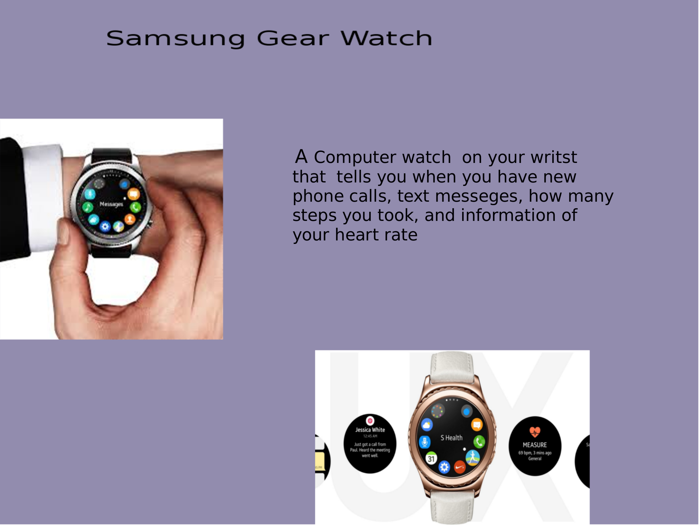

Jennifer's Capstone website
| Home | strengths | Create | Exlpore | College | Research paper |
Response 2A. The computing innovation I chose is the Samsung gear watch which is a computer watch on your wrist that notifies you when you receive text messages, calls, and can give you information of your heart rate and can also keep track of your calories .The purpose is to take calls very quickly without having your phone with you(3). It works by connecting your samsung phone device to the watch and from there it collects all your data that your phone has to the watch. This artifact illustrates how the samsung wash looks like and what the samsung watch does.The samsung watch was out on September 4, 2013 .
Response 2B. I created this artifact by using a program to help me organize my artifact. The program I used to create this artifact is called GIMP. First, I had to search up some images from google ofmy innovation. Then, i copied the image to put it on Gimp and pasted there. After that had to look for a background so that i can paste my images and so it can have some color.
Response 2c. The Samsung gear watch is beneficial because it can prevent heart attacks since it keeps track on how much your heart beats. It also helps for athletes because it signal your body if it needs more rest or if you are still good to exercise more. It is also good for dieting because it keeps track of the calories you have consume .(2)On the other hand, the samsung watch is harmful because it is not like the non computer. The samsung watch has access to your credit card information so if you lose your watch someone can have access to your credit card and can still your money .A potential impact on society is that the Samsung watch can makes life easier for old people and can make them live longer since the heart rate sensors warns them when the heart rate is to high .
Response 2d.The Samsung gear watch collects data of the users heartbeat and can collect the users motions by using a LED light sensor(1). The led sensor work together to sense your blood flow and from there it gives the user an accurate heart rate. The samsung gear watch processes the heart rate data and can sense for any signs of heart attacks. A potential privacy concern of the Samsung watch is that if you ever lose it and someone finds it, the watch has your location and people can stalk you and know where you are at.
